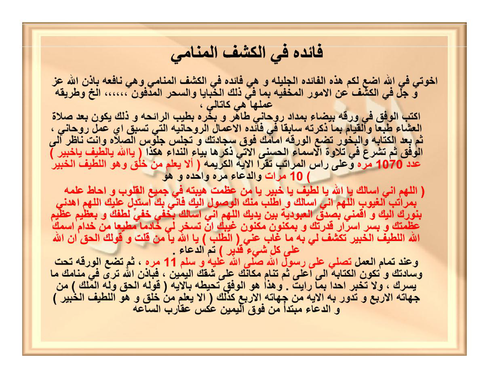
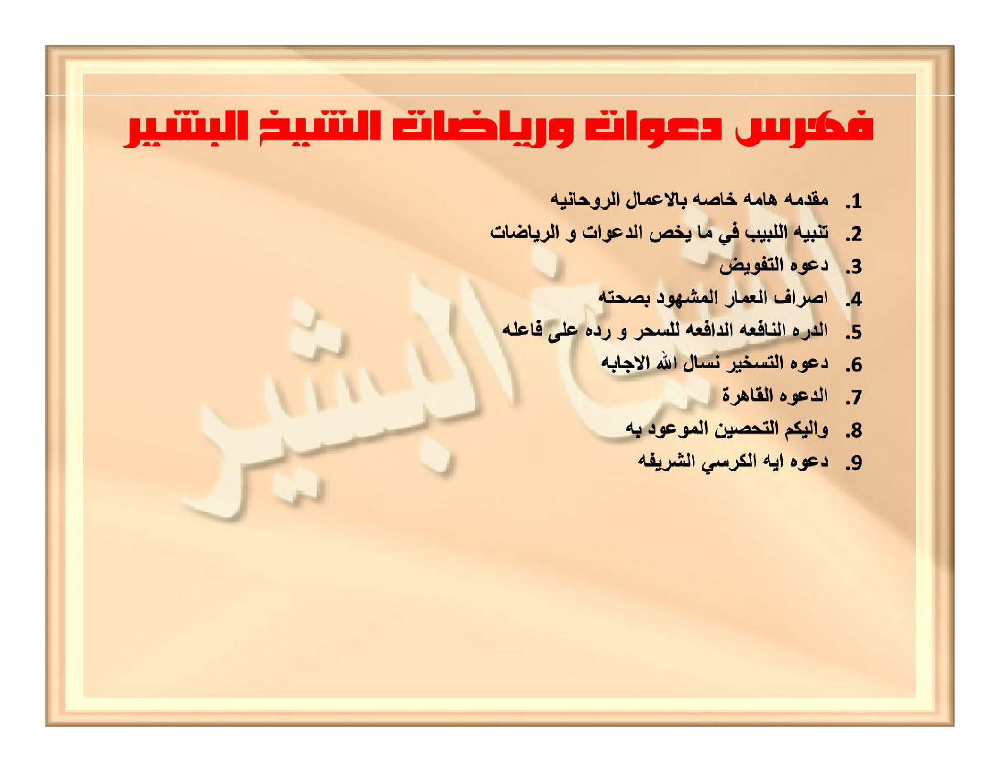

HALAMAN 29 — FĀ'IDATUN FIL-KASYFIL-MANĀMĪ (1/2) — فَائِدَةٌ فِي الْكَشْفِ الْمَنَامِيِّ
arab
latin
Fā'idatun fil-kasyfil-manāmiyyi.
Ikhwatī fillāhi adha'u lakum hādzihil-fā'idatal-jalīlata wa hiya fā'idatun fil-kasyfil-manāmiyyi wa hiya nāfi'atun bi-idznillāhi 'azza wa jalla fil-kasyfi 'anil-umūril-makhfiyyati bimā fī dzālikal-khabāyā was-sihril-madfūni ... ilā ākhirihī, wa tharīqatu 'amalihā hiya kat-tālī:
Uktubil-wafqa fī waraqatin baidhā'a bimidādin rūhāniyyin thāhirin wa bakhkhirhu bithībir-rā'ihati wa dzālika yakūnu ba'da shalātil-'isyā'i thab'an wal-qiyāmi bimā dzakartuhū sābiqan fī fā'idatil-a'mālir-rūhāniyyatil-latī tasbiqu ayya 'amalin rūhāniyyin, tsumma ba'dal-kitābati wal-bakhūri tadha'ul-waraqata amāmaka fauqa sajjādatika wa tajlisu julūsash-shalāti wa anta nāzhirun ilal-wafqi tsumma tasyra'u fī tilāwatil-asmā'il-husnal-ātī dzikruhā biyā'in-nidā'i hākadzā ( Yā Allāhu Yā Lathīfu Yā Khabīru ) 'adada 1070 marratan wa 'alā ra'sil-marātibi taqra'ul-āyatal-karīmata ( Alā ya'lamu man khalaqa wa huwal-Lathīful-Khabīru ) 10 marrātin wad-du'ā'a marratan wāhidatan wa huwa:
( Allāhumma innī as'aluka Yā Allāhu Yā Lathīfu Yā Khabīru yā man 'azhumat haibatuhū fī jamī'il-qulūbi wa ahātha 'ilmuhū bimarātibil-ghuyūbi, Allāhumma innī as'aluka wa athlubu minkal-wushūla ilaika fa-innī bika astadillu 'alaika, Allāhummahdinī binūrika ilaika wa aqimnī bishidqil-'ubūdiyyati baina yadaika, Allāhumma innī as'aluka bikhafiyyi khafiyyi luthfika wa bi'azhīmi 'azhīmi 'azhamatika wa bisirri asrāri qudratika wa bimaknūni maknūni ghaibika an tusakhkhira lī khādiman muthī'an min khuddāmismikallāhil-Lathīfil-Khabīri taksyifu lī bihī mā ghāba 'annī ( ath-thalabu ) Yā Allāhu yā man qulta wa qaulukal-haqqu ( Innallāha 'alā kulli syai'in qadīrun ) ) tammad-du'ā'u.
Wa 'inda tamāmil-'amali tushallī 'alā Rasūlillāhi shallallāhu 'alaihi wa sallama 11 marratan, tsumma tadha'ul-waraqata tahta wisādatika wa takūnul-kitābatu ilā a'lā tsumma tanāmu makānaka 'alā syiqqikal-yamīni, fabi-idznillāhi tarā fī manāmika mā yasurruka, wa lā tukhbir ahadan bimā ra'aita. Wa hādzā huwal-wafqu tuhīthuhū bil-āyati ( Qauluhul-haqqu wa lahul-mulku ) min jihātihil-arba'i wa tadūru bihil-āyatu min jihātihil-arba'i kadzālika ( Alā ya'lamu man khalaqa wa huwal-Lathīful-Khabīru ) wad-du'ā'u mubtadi'an min fauqil-yamīni 'aksa 'aqāribis-sā'ati.
Terjemahan
Faedah tentang penyingkapan melalui mimpi (al-kasyful-manāmī).
Wahai saudara-saudaraku karena Allah, aku letakkan untuk kalian faedah yang agung ini, yaitu faedah dalam penyingkapan melalui mimpi, dan ia bermanfaat dengan izin Allah 'azza wa jalla dalam menyingkap perkara-perkara yang tersembunyi, termasuk di dalamnya barang-barang yang terpendam dan sihir yang dikubur, dan seterusnya. Adapun tata cara pengamalannya adalah sebagai berikut:
Tulislah wafaq tersebut pada selembar kertas putih dengan tinta ruhani yang suci, dan asapilah dengan wewangian yang harum; hal itu tentu dilakukan setelah shalat Isya serta setelah melaksanakan apa yang telah aku sebutkan sebelumnya pada faedah amalan-amalan ruhani yang mendahului setiap amalan ruhani. Kemudian setelah penulisan dan pengasapan, engkau meletakkan kertas itu di hadapanmu di atas sajadahmu dan engkau duduk sebagaimana duduk dalam shalat seraya memandang ke arah wafaq tersebut. Kemudian engkau mulai membaca Asmaul Husna yang akan disebutkan berikut ini dengan menggunakan yā' nidā' (kata seru) seperti ini: (Yā Allāhu Yā Lathīfu Yā Khabīru — Wahai Allah, Wahai Yang Maha Halus, Wahai Yang Maha Mengetahui secara mendalam) sebanyak 1070 kali; dan pada setiap penghujung tingkatan bilangan (70, 100, 200, dst. hingga 1070) engkau membaca ayat yang mulia: (Apakah Tuhan yang menciptakan itu tidak mengetahui; sedangkan Dia Maha Halus lagi Maha Mengetahui? — QS. al-Mulk: 14) sebanyak 10 kali, serta membaca doa berikut satu kali, yaitu:
(Ya Allah, sesungguhnya aku memohon kepada-Mu, wahai Allah, wahai Yang Maha Halus, wahai Yang Maha Mengetahui, wahai Dzat yang keagungan wibawa-Nya memenuhi seluruh hati dan ilmu-Nya meliputi seluruh tingkatan alam gaib. Ya Allah, sesungguhnya aku memohon kepada-Mu dan meminta kepada-Mu untuk sampai kepada-Mu, karena sesungguhnya dengan-Mu aku mencari petunjuk menuju-Mu. Ya Allah, tunjukilah aku dengan cahaya-Mu menuju-Mu, dan tegakkanlah aku dengan ketulusan penghambaan di hadapan-Mu. Ya Allah, sesungguhnya aku memohon kepada-Mu dengan kelembutan-Mu yang paling tersembunyi, dengan keagungan-Mu yang paling agung, dengan rahasia dari segala rahasia kekuasaan-Mu, dan dengan perbendaharaan gaib-Mu yang paling tersimpan rapat, agar Engkau menundukkan bagiku seorang khadim yang taat dari para khadim Asma-Mu: Allāh al-Lathīf al-Khabīr, yang dengannya Engkau menyingkapkan bagiku apa yang tersembunyi dariku [sebutkan hajat/perkara yang ingin disingkap], wahai Allah, wahai Dzat yang telah berfirman dan firman-Mu adalah kebenaran: Sesungguhnya Allah Maha Kuasa atas segala sesuatu — QS. al-Baqarah: 20). Selesailah doa tersebut.
Dan ketika seluruh amalan telah sempurna, engkau bershalawat atas Rasulullah shallallahu 'alaihi wa sallam sebanyak 11 kali, kemudian engkau meletakkan kertas tersebut di bawah bantalmu dengan posisi tulisan menghadap ke atas, lalu engkau tidur di tempatmu di atas lambung (sisi tubuh) kananmu; maka dengan izin Allah engkau akan melihat di dalam mimpimu apa yang menggembirakanmu (menunjukkan jawaban yang dicari), dan janganlah engkau memberitahukan kepada siapa pun tentang apa yang telah engkau lihat. Dan inilah wafaqnya (pada Halaman 30): engkau mengelilinginya dengan ayat (Firman-Nya adalah benar dan milik-Nyalah segala kerajaan — QS. al-An'ām: 73) dari keempat sisinya, dan diputar mengelilinginya pula dari keempat sisinya ayat (Apakah Tuhan yang menciptakan itu tidak mengetahui; sedangkan Dia Maha Halus lagi Maha Mengetahui? — QS. al-Mulk: 14) beserta doanya, dimulai dari kanan atas berlawanan arah jarum jam.
Syarah dan Penjelasan
- Pada draf kiriman bagian transliterasi Latin terputus di tengah halaman (teks doa `Allāhumma innī as'aluka...` dan seluruh paragraf penutup `Wa 'inda tamāmil-'amali...` hilang), serta bagian terjemahan diringkas menjadi poin-poin bebas tanpa menerjemahkan isi doa. Dalam revisi ini seluruh teks Arab, Latin (dengan kaidah `sy` dan `zh` seperti `nāzhirun`, `'azhumat`, `bikhafiyyi`), dan Terjemahan dikembalikan utuh 100% sesuai baris kitab.
2. **Rahasia Bilangan 1070 (`عَدَدَ ١٠٧٠ مَرَّةً`) & `رَأْسُ الْمَرَاتِبِ`**:
- Tiga Asmaul Husna yang dipanggil dengan huruf seruan (`يَا اللهُ يَا لَطِيفُ يَا خَبِيرُ`) memiliki nilai hisab Jumal Kabir:
- `الله` = **66**
- `لطيف` = **129**
- `خبير` = **812**
- Jumlah ketiganya = `66 + 129 + 812 = 1007`, dan apabila dihitung bersama huruf seruan / penggenapan thabaqāt mukhammas menjadi **1070**.
- Istilah **`عَلَى رَأْسِ الْمَرَاتِبِ`** (*di setiap kepala tingkatan bilangan*) dalam disiplin ilmu hikmah berarti: ketika membaca 1070 kali, bacaan dijeda pada kepala satuan/puluhan pertama (**70**), lalu setiap genap ratusan (**100, 200, 300, 400, 500, 600, 700, 800, 900, 1000** — total 11 jeda) untuk membaca QS. al-Mulk: 14 sebanyak 10× dan Doa Kasyf 1×.
3. **Kesesuaian Ayat Kunci QS. al-Mulk: 14 & QS. al-An'ām: 73**:
- QS. al-Mulk: 14 (`أَلَا يَعْلَمُ مَنْ خَلَقَ وَهُوَ اللَّطِيفُ الْخَبِيرُ`) adalah ayat kunci *kasyf* (penyingkapan) paling masyhur di kalangan ulama hikmah karena memadukan sifat *al-Lathīf* (Yang menembus perkara paling halus/tersembunyi) dan *al-Khabīr* (Yang mengetahui hakikat batin).
- Adapun bingkai dalam wafaq menggunakan potongan QS. al-An'ām: 73 (`قَوْلُهُ الْحَقُّ وَلَهُ الْمُلْكُ` — 4 kata untuk 4 sisi bingkai wafaq), yang huruf-huruf awalnya (atau nilai hisabnya) menjadi fondasi pengunci kebenaran penglihatan mimpi (*ru'yā shādiqah*).
Khususiyah dan Tatacara Praktik
2. **Syarat Pendahuluan**: Wajib dikerjakan setelah shalat Isya dalam keadaan suci lahir batin, serta terlebih dahulu melakukan *tahshīn* (benteng diri) dan *ishrāful-'ummār* sebagaimana kaidah umum amalan ruhani yang telah dijelaskan Syeikh al-Basyir pada halaman-halaman awal kitab.
3. **Adab Fokus Pandangan (`Nāzhirun ilal-wafqi`)**: Selama berzikir 1070×, kertas wafaq yang telah diasapi bukhur wangi diletakkan di atas sajadah di depan pengamal, dan mata memandang tenang ke arah pusat wafaq agar bentuk geometris angka asror terekam dalam batin sebelum tidur.
4. **Adab Tidur & Pantangan Membocorkan Rahasia (`Wa lā tukhbir ahadan bimā ra'aita`)**:
- Setelah menutup wirid dengan shalawat 11×, letakkan kertas wafaq di bawah bantal dengan permukaan tulisan menghadap ke atas (`الْكِتَابَةُ إِلَى أَعْلَى`), lalu langsung tidur di tempat shalat tersebut dengan posisi miring ke lambung kanan (`عَلَى شِقِّكَ الْيَمِينِ`) tanpa berbicara urusan duniawi lagi.
- **Syarat mutlak**: Apa yang tampak di dalam mimpi tidak boleh diceritakan kepada siapa pun agar pintu *kasyf* tidak tertutup.

HALAMAN 30 — WAFAQ MUKHAMMAS 5×5 AL-KASYFUL-MANĀMĪ (2/2) — فَائِدَةٌ فِي الْكَشْفِ الْمَنَامِيِّ
arab
| ١٤٢ | ٢٣٠ | ٣٠٧ | ٩١٠ | ١٦٧٧ |
| ٩١١ | ١٦٧٨ | ١٤٣ | ٢٢٦ | ٣٠٨ |
| ٢٢٧ | ٣٠٤ | ٩١٢ | ١٦٧٩ | ١٤٤ |
| ١٦٨٠ | ١٤٥ | ٢٢٨ | ٣٠٥ | ٩٠٨ |
| ٣٠٦ | ٩٠٩ | ١٦٧٦ | ١٤٦ | ٢٢٩ |

latin
Fā'idatun fil-kasyfil-manāmiyyi.
| ١٤٢ | ٢٣٠ | ٣٠٧ | ٩١٠ | ١٦٧٧ |
| ٩١١ | ١٦٧٨ | ١٤٣ | ٢٢٦ | ٣٠٨ |
| ٢٢٧ | ٣٠٤ | ٩١٢ | ١٦٧٩ | ١٤٤ |
| ١٦٨٠ | ١٤٥ | ٢٢٨ | ٣٠٥ | ٩٠٨ |
| ٣٠٦ | ٩٠٩ | ١٦٧٦ | ١٤٦ | ٢٢٩ |
[Wafaq Mukhammas 5×5 — Asror Angka Arab, tidak dilatinkan]
Terjemahan
Faedah tentang penyingkapan melalui mimpi (al-kasyful-manāmī).
| ١٤٢ | ٢٣٠ | ٣٠٧ | ٩١٠ | ١٦٧٧ |
| ٩١١ | ١٦٧٨ | ١٤٣ | ٢٢٦ | ٣٠٨ |
| ٢٢٧ | ٣٠٤ | ٩١٢ | ١٦٧٩ | ١٤٤ |
| ١٦٨٠ | ١٤٥ | ٢٢٨ | ٣٠٥ | ٩٠٨ |
| ٣٠٦ | ٩٠٩ | ١٦٧٦ | ١٤٦ | ٢٢٩ |
[Wafaq Mukhammas 5×5 — Asror Angka Arab, tidak diterjemahkan]
Syarah dan Penjelasan
- Pada draf yang beredar, terdapat banyak kesalahan baca dan pengosongan sel karena tertutup bayangan watermark: baris 1 ditulis `142 | 230 | 207 | 910 | 1977` (salah baca `٣٠٧` menjadi `207` dan `١٦٧٧` menjadi `1977`), baris 2 ditulis `1911 | 167...` (salah baca `٩١١` menjadi `1911` dan `١٦٧٨` menjadi `167`), serta 4 kotak pada baris 3 dan 4 ditulis `[ KOTAK INTI ]` seolah-olah kosong. Selain itu draf juga menambahkan kalimat `Muntadāl-Anwāril-Qādiriyyati...` yang sama sekali tidak ada pada halaman kitab.
- Berdasarkan pemeriksaan 3× atas scan resolusi tinggi `wafaq_hal30.jpg` (`IMG_20261025_102900.jpg`) dan rumus baku *Wafaq Mukhammas* (5×5), **seluruh 25 sel berisi angka penuh tanpa satu pun kotak kosong**, dan memiliki jumlah konstan (*dhl'ul-mukhammas*) sebesar **٣٢٦٦ (3266)** pada semua baris, kolom, dan kedua diagonalnya:
- **Baris 1 (kanan→kiri)**: `١٤٢ + ٢٣٠ + ٣٠٧ + ٩١٠ + ١٦٧٧ = ٣٢٦٦` (visual kiri→kanan: `١٦٧٧ | ٩١٠ | ٣٠٧ | ٢٣٠ | ١٤٢`)
- **Baris 2 (kanan→kiri)**: `٩١١ + ١٦٧٨ + ١٤٣ + ٢٢٦ + ٣٠٨ = ٣٢٦٦` (visual kiri→kanan: `٣٠٨ | ٢٢٦ | ١٤٣ | ١٦٧٨ | ٩١١`)
- **Baris 3 (kanan→kiri)**: `٢٢٧ + ٣٠٤ + ٩١٢ + ١٦٧٩ + ١٤٤ = ٣٢٦٦` (visual kiri→kanan: `١٤٤ | ١٦٧٩ | ٩١٢ | ٣٠٤ | ٢٢٧`)
- **Baris 4 (kanan→kiri)**: `١٦٨٠ + ١٤٥ + ٢٢٨ + ٣٠٥ + ٩٠٨ = ٣٢٦٦` (visual kiri→kanan: `٩٠٨ | ٣٠٥ | ٢٢٨ | ١٤٥ | ١٦٨٠`)
- **Baris 5 (kanan→kiri)**: `٣٠٦ + ٩٠٩ + ١٦٧٦ + ١٤٦ + ٢٢٩ = ٣٢٦٦` (visual kiri→kanan: `٢٢٩ | ١٤٦ | ١٦٧٦ | ٩٠٩ | ٣٠٦`)
- **Kolom 1 s.d. 5**: masing-masing tepat berjumlah **٣٢٦٦ (3266)**.
- **Diagonal 1**: `١٤٢ + ١٦٧٨ + ٩١٢ + ٣٠٥ + ٢٢٩ = ٣٢٦٦`
- **Diagonal 2**: `١٦٧٧ + ٢٢٦ + ٩١٢ + ١٤٥ + ٣٠٦ = ٣٢٦٦`
2. **Rahasia Deret Langkah (*Tarqī*) Wafaq 5×5**:
- Wafaq ini disusun dalam 5 kelompok deret berurutan (*khamsu marātib*), masing-masing terdiri dari 5 angka berurutan (+1):
- Kelompok 1 (*Miftāh*): `١٤٢، ١٤٣، ١٤٤، ١٤٥، ١٤٦` (142–146)
- Kelompok 2: `٢٢٦، ٢٢٧، ٢٢٨، ٢٢٩، ٢٣٠` (226–230)
- Kelompok 3: `٣٠٤، ٣٠٥، ٣٠٦، ٣٠٧، ٣٠٨` (304–308)
- Kelompok 4: `٩٠٨، ٩٠٩، ٩١٠، ٩١١، ٩١٢` (908–912; sel pusat/qalb = **`٩١٢`**)
- Kelompok 5 (*Maghlāq*): `١٦٧٦، ١٦٧٧، ١٦٧٨، ١٦٧٩، ١٦٨٠` (1676–1680)
- Sesuai kaidah yang ditetapkan, seluruh angka di dalam wafaq merupakan *asror* dan wajib ditulis dengan angka Arab tanpa dilatinkan maupun diterjemahkan.
3. **Bingkai Hijau `قَوْلُهُ الْحَقُّ وَلَهُ الْمُلْكُ` & Lingkaran Doa**:
- Keempat sisi bingkai hijau yang memagari kisi 5×5 adalah kaligrafi `قَوْلُهُ الْحَقُّ وَلَهُ الْمُلْكُ` (`قوله` di sisi kanan, `الحق` di sisi atas, `وله` di sisi kiri, `الملك` di sisi bawah).
- Adapun lingkaran luar yang mengelilingi bingkai dimulai dari kanan atas bergerak berlawanan arah jarum jam (`عَكْسَ عَقَارِبِ السَّاعَةِ`), memuat QS. al-Mulk: 14 dilanjutkan Doa Kasyf lengkap hingga `إِنَّ اللهَ عَلَى كُلِّ شَيْءٍ قَدِيرٌ`.
Khususiyah dan Tatacara Praktik
2. **Pengisian Hajat (`الطَّلَبُ`)**: Pada bagian lingkaran doa yang bertanda `( الطَّلَبُ )`, pengamal menuliskan atau menyebutkan secara spesifik perkara gaib/tersembunyi yang ingin disingkap (misalnya letak sihir yang ditanam atau barang yang hilang).
3. **Penyimpanan di Bawah Bantal**: Setelah diasapi bukhur yang harum dan dibacakan zikir `يَا اللهُ يَا لَطِيفُ يَا خَبِيرُ` 1070× beserta ayat dan doanya pada tiap kepala tingkatan (sebagaimana rincian Halaman 29), kertas wafaq ini diletakkan di bawah bantal dengan tulisan menghadap ke atas sebelum tidur miring ke kanan.

HALAMAN 31 — DA'AWĀTU WA RIYĀDHĀTUSY-SYAIKHIL-BASYĪRI — دَعَوَاتُ وَرِيَاضَاتُ الشَّيْخِ الْبَشِيرِ
arab
الشَّيْخِ الْبَشِيرِ
latin
Da'awātu wa riyādhātu
asy-Syaikhil-Basyīri
Terjemahan
Doa-doa dan riyadhah-riyadhah
Syeikh al-Basyir
Syarah dan Penjelasan
- Halaman 31 merupakan sampul pemisah menuju Bagian Kedua kitab yang hanya memuat 4 kata dalam 2 baris: `دَعَوَاتُ وَرِيَاضَاتُ` pada baris pertama dan `الشَّيْخِ الْبَشِيرِ` pada baris kedua.
- Secara gramatikal Arab (*nahwu*), kata `دَعَوَاتُ وَرِيَاضَاتُ` berkedudukan sebagai *mudhāf* (tanpa tanwin) yang disandarkan kepada *mudhāf ilaih* `الشَّيْخِ الْبَشِيرِ` (*majrūr*), sehingga dibaca *Da'awātu wa riyādhātusy-Syaikhil-Basyīri* (bukan *Da'awātun wa riyādhātun* dengan tanwin sebagaimana tertulis pada draf).
2. **Makna Istilah *Da'awāt* & *Riyādhāt***:
- ***Da'awāt*** (jamak dari *da'wah*): untaian doa-doa agung, *'azīmah*, dan *qasam* yang bersumber dari ayat-ayat Al-Qur'an serta Asmaul Husna untuk memohon pertolongan Allah dalam berbagai hajat besar.
- ***Riyādhāt*** (jamak dari *riyādhah*): latihan penempaan jiwa, penyucian batin, dan kedisiplinan wirid dalam jangka waktu tertentu (seperti 3, 7, atau 41 hari) guna mematangkan kesiapan ruhani pengamal.
Khususiyah dan Tatacara Praktik
2. **Kewajiban Mempelajari Muqaddimah & Tanbīh**: Sebelum mengamalkan satu pun *da'wah* pada bagian kedua ini, setiap pengamal diwajibkan membaca dengan saksama pasal *Muqaddimah Hāmmah* dan *Tanbīhul-Labīb* yang tercantum pada daftar isi halaman berikutnya (Halaman 32).

HALAMAN 32 — FIHRISU DA'AWĀTI WA RIYĀDHĀTISY-SYAIKHIL-BASYĪRI — فِهْرِسُ دَعَوَاتِ وَرِيَاضَاتِ الشَّيْخِ الْبَشِيرِ
arab
٢. تَنْبِيهُ اللَّبِيبِ فِي مَا يَخُصُّ الدَّعَوَاتِ وَالرِّيَاضَاتِ
٣. دَعْوَةُ التَّفْوِيضِ
٤. إِصْرَافُ الْعُمَّارِ الْمَشْهُودُ بِصِحَّتِهِ
٥. الدُّرَّةُ النَّافِعَةُ الدَّافِعَةُ لِلسِّحْرِ وَرَدِّهِ عَلَى فَاعِلِهِ
٦. دَعْوَةُ التَّسْخِيرِ نَسْأَلُ اللهَ الْإِجَابَةَ
٧. الدَّعْوَةُ الْقَاهِرَةُ
٨. وَإِلَيْكُمُ التَّحْصِينُ الْمَوْعُودُ بِهِ
٩. دَعْوَةُ آيَةِ الْكُرْسِيِّ الشَّرِيفَةِ
latin
Fihrisu da'awāti wa riyādhātisy-Syaikhil-Basyīri
1. Muqaddimatun hāmmatun khāshshatun bil-a'mālir-rūhāniyyati
2. Tanbīhul-labībi fī mā yakhushshud-da'awāti war-riyādhāti
3. Da'watut-tafwīdhi
4. Ishrāful-'ummāril-masyhūdu bishihhatihī
5. Ad-durratun-nāfi'atud-dāfi'atu lis-sihri wa raddihī 'alā fā'ilihī
6. Da'watut-taskhīri nas'alullāhal-ijābata
7. Ad-da'watul-qāhiratu
8. Wa ilaikumut-tahshīnul-mau'ūdu bihī
9. Da'watu āyatil-kursiyyisy-syarīfati
Terjemahan
Daftar isi doa-doa dan riyadhah-riyadhah Syeikh al-Basyir
1. Mukadimah penting yang khusus berkaitan dengan amalan-amalan ruhani
2. Peringatan bagi orang yang berakal cerdas mengenai hal-hal yang berkaitan dengan doa-doa dan riyadhah-riyadhah
3. Doa Tafwīdh (penyerahan diri sepenuhnya kepada Allah)
4. Ishrāful-'Ummār (pemindahan penghuni halus tempat) yang telah disaksikan kesahihannya
5. Mutiara yang bermanfaat lagi menolak sihir serta mengembalikannya kepada pelakunya
6. Doa Taskhīr (penundukan), kami memohon kepada Allah pengabulannya
7. Doa al-Qāhirah (yang menundukkan dengan perkasa)
8. Dan inilah untuk kalian Tahshīn (benteng penjagaan diri) yang telah dijanjikan
9. Doa Ayat Kursi yang mulia
Syarah dan Penjelasan
- **Poin 6 (`دَعْوَةُ التَّسْخِيرِ نَسْأَلُ اللهَ الْإِجَابَةَ`)**: Pada draf tertulis *Da'watut-Tasghīri* (dengan huruf *gh* yang berarti pengecilan/penghinaan `تَصْغِير`), padahal di kitab asli tertulis jelas **`التَّسْخِيرِ`** dengan huruf *kh* (`خ`) yaitu ***Da'watut-taskhīri*** (Doa Penundukan). Selain itu, kalimat doa pengarang `نَسْأَلُ اللهَ الْإِجَابَةَ` (*"kami memohon kepada Allah pengabulannya"*) pada terjemahan draf sempat dihilangkan dan kini telah dikembalikan secara utuh.
- **Poin 4 & 8**: Perbaikan transliterasi huruf *shād* (`ص`) pada `بِصِحَّتِهِ` (*bishihhatihī*, bukan *bisihhatihī*) dan `التَّحْصِينُ` (*at-tahshīnul*, bukan *at-tahsīnul*), serta *syīn* (`ش`) pada `الشَّيْخِ` (*asy-Syaikhil*) dan `الْمَشْهُودُ` (*al-masyhūdu*).
- **Poin 5 (`وَرَدِّهِ عَلَى فَاعِلِهِ`)**: Kata `وَرَدِّهِ` dibaca *majrūr* (*wa raddihī*) karena *ma'thūf* (mengikuti hukum i'rab) pada kata `لِلسِّحْرِ` (*majrūr* dengan huruf jar *lām*).
2. **Sistematika 9 Bab Bagian Kedua Kitab**:
- Syeikh al-Basyir menyusun bagian kedua ini dengan urutan metodologis yang sangat rapi:
- **Fondasi Ilmu & Adab (Bab 1–2)**: *Muqaddimah Hāmmah* dan *Tanbīhul-Labīb* sebagai pedoman syarat, adab, serta rambu-rambu bagi pengamal *da'wah* dan *riyādhah*.
- **Kesiapan Batin & Tempat (Bab 3–4 & 8)**: *Da'watut-Tafwīdh* (penyerahan urusan kepada Allah), *Ishrāful-'Ummār* (sterilisasi tempat amalan dari gangguan jin penghuni ruang), serta *at-Tahshīn al-Mau'ūd bih* (benteng penjagaan diri yang telah dijanjikan pengarang pada bagian pertama kitab).
- **Amalan Inti Pengobatan, Penundukan & Kewibawaan (Bab 5, 6, 7, 9)**: *Ad-Durratun-Nāfi'ah* (penolak dan pembalik sihir), *Da'watut-Taskhīr*, *Ad-Da'watul-Qāhirah*, hingga puncaknya *Da'watu Āyatil-Kursī asy-Syarīfah*.
Khususiyah dan Tatacara Praktik
2. **Rujukan Silang (*Cross-Reference*)**: Ketika pada halaman-halaman sebelumnya (termasuk Halaman 29) Syeikh al-Basyir menyebutkan *"melaksanakan apa yang telah aku sebutkan sebelumnya pada faedah amalan-amalan ruhani"*, rincian lengkap tentang *Ishrāful-'Ummār* dan *Tahshīn* tersebut dipaparkan secara tuntas dalam bab-bab yang terdaftar pada Halaman 32 ini.

Indeks Preview Hal01-32 — Syarah & Khususiyah Lengkap
PREVIEW_HAL01-08_GABUNGAN.html
PREVIEW_HAL01_SAMPUL.html
PREVIEW_HAL02_IHDA.html
PREVIEW_HAL03_IJAZAH.html
PREVIEW_HAL04_FIHRIS.html
PREVIEW_HAL04_SAMPUL_DALAM.html
PREVIEW_HAL05_FIHRIS.html
PREVIEW_HAL06_MAYSARAH_1_3.html
PREVIEW_HAL07_MAYSARAH_2_3.html
PREVIEW_HAL08_MAYSARAH_3_3.html
PREVIEW_HAL09_FAIDAH_MUHRQAH.html
PREVIEW_HAL10_FAIDAH_MUHRQAH_2.html
PREVIEW_HAL11_FAIDAH_QATHIAH_1.html
PREVIEW_HAL12_FAIDAH_QATHIAH_WAFQ.html
PREVIEW_HAL13_ZAJR_QATHI_1_3.html
PREVIEW_HAL14_ZAJR_QATHI_2_3.html
PREVIEW_HAL15_ATHLUSH_1_3.html
PREVIEW_HAL16_ATHLUSH_2_3.html
PREVIEW_HAL17_DURRAH_1_2.html
PREVIEW_HAL18_WAFAQ_4X4_2_2.html
PREVIEW_HAL19_TADMIR_1_2.html
PREVIEW_HAL20_WAFAQ_3X3.html
PREVIEW_HAL21_QAHR_QARIN_1_1.html
PREVIEW_HAL22_SAIF_BATTAR_1_3.html
PREVIEW_HAL25_QATHIAH_RADD_KHADIM_1_1.html
PREVIEW_HAL26_DUA_KHAIF_1_1.html
PREVIEW_HAL27_ASYR_MUBTILAT_1_1.html
PREVIEW_HAL28_WAFAQ_ASYR_MUBTILAT_2_2.html
PREVIEW_HAL29_KASYF_MANAMI_1_2.html
PREVIEW_HAL30_WAFAQ_KASYF_MANAMI_2_2.html
PREVIEW_HAL31_SAMPUL_DAAWAT.html
PREVIEW_HAL32_FIHRIS_DAAWAT.html
Final Gabungan
Markdown gabungan Hal01-32